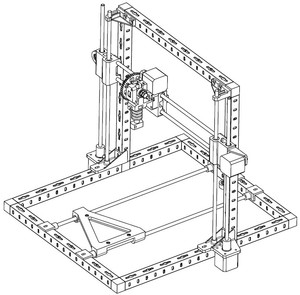

Un gros bidule
Pourquoi pas construire une imprimante 3D ?

Une imprimante 3D est une machine qui permet de reproduire des pièces plus ou moins complexes par apport de matière. Il existe plusieurs types d’imprimantes, selon le principe d’apport de matière utilisé. Le périmètre de ce projet est une imprimante qui extrude du plastique à déposer couches par couches.
Le projet est toujours à l’état de conception. il me reste les dernière pièces à concevoir avant de commencer à monter le chassie.
Objectif
Le principal objectif est, évidement, de construire une imprimante 3D. Cette imprimante fonctionnera sur le principe d’extrusion de matière plastique. Je m’appuie sur les imprimantes Reprap http://reprap.org/wiki/RepRap/fr. Dans cette perspective, je m’autorise à réutiliser, modifier, adapter des pièces conçues pour d’autres imprimantes Reprap. Une contrainte forte de ce projet est le budget. En référence, une imprimante Reprap i3 en kit est vendue 450€ sans l’électronique de commande (600€ tout compris). Mon objectif est de limiter mon budget à 250€. C’est difficilement atteignable, mais pas impossible.
Les imprimantes RepRap
Le principe de ces imprimantes est qu’elles sont réplicables. Concrêtement, pour fabriquer une imprimante RepRap, on profite d’une autre imprimante pour imprimer des pièces. Mon projet repose sur ce principe. En effet, pour des questions de facilité (je m’affranchis de certains usinages complexe), la plupart des supports seront imprimés.
Rendez-vous sur mon repository github: https://github.com/landru29/printer
git clone https://github.com/landru29/printer.git
Téléchargez la doc: https://github.com/landru29/printer/raw/master/doc/printer.pdf
Téléchargez le dossier de définition: https://github.com/landru29/printer/raw/master/doc/definition.pdf